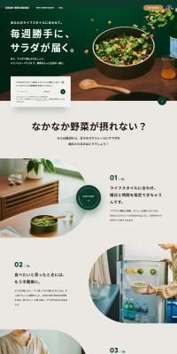

01
満足感のある一皿
野菜だけで終わらず、雑穀やたんぱく質も合わせて午後まで軽く満たします。
SEASONAL VEGETABLE CAFE
毎週の食事に、サラダが届くような安心感を。 Green Spoon Cafe は、旬野菜をたっぷり使ったボウルランチとデリで、 忙しい日でも野菜不足をおいしく整えるカフェです。

野菜だけで終わらず、雑穀やたんぱく質も合わせて午後まで軽く満たします。
旬の野菜を軸に、焼き野菜、豆、マリネなど飽きない組み合わせを用意します。
落ち着いた席とやさしい店内で、ランチにも午後の休憩にも使いやすい空間です。
ランチボウルやデリセットはテイクアウト対応。仕事帰りにも受け取れます。
彩り野菜、塩麹チキン、雑穀ごはん、季節のポタージュを ひとつにまとめた満足感のある定番ランチです。
契約農家から届く旬の野菜を使い、食後まで重くならないバランスに整えています。 ひとりランチ、親子カフェ、テイクアウトまで、日常に入れやすい店づくりです。
12時台は混み合いやすいため、事前予約かテイクアウト予約がおすすめです。 本番運用では、予約フォームやLINE導線へ接続できます。
予約導線を見るRESERVE
野菜不足を感じたら、まずは一食から。 店内予約もテイクアウト予約も、同じ導線から受け付けられる想定です。